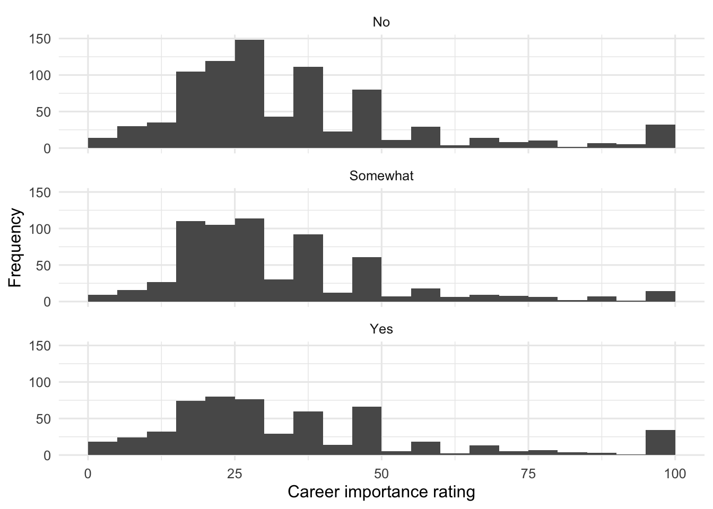

source("scripts/_setup.R")Chapters 3 and 4: Central Tendency and Variability
Describing and comparing quantitative distributions
Use descriptive statistics and histograms to compare career-importance ratings across living-at-home groups.
Chapters 3 and 4 of Exploring Statistics introduce descriptive statistics that summarize quantitative variables. A single average never tells the whole story, so you will pair measures of central tendency with variability and distribution shape as you compare groups.
Learning Goals
By the end of this chapter, you should be able to:
- calculate and interpret the mean, median, mode, and standard deviation;
- use minimum and maximum values to check whether scores fit the intended scale;
- identify and set aside an impossible value;
- compare descriptive statistics across groups;
- use faceted histograms to compare distribution shape; and
- adapt a descriptive-statistics pattern for a variable you choose.
Research Questions
This chapter is organized around two research questions:
- How important do emerging adults consider their career to be part of their lives? Do ratings of career importance, rated from 0-100%, vary as a function of whether or not the individual is still living at home?
- What can descriptive statistics tell us about variables you choose from the EAMMi2 codebook?
Research Question 1 provides a worked grouped analysis. Research Question 2 asks you to produce a similar analysis with less guidance.
Research Question 1: Career Importance And Living At Home
How important do emerging adults consider their career to be part of their lives? Do ratings of career importance, rated from 0-100%, vary as a function of whether or not the individual is still living at home? Generate descriptive statistics for ratings of career importance for those still living at home, those “somewhat” living at home, and those no longer living at home.
Get Ready
This chapter uses scripts/03-04-central-tendency-variability.R in the starter files.
Open the Chapter 3/4 script
- Open
exploring-statistics-r.Rproj. - In the Output pane, select the Files tab.
- Open the
scriptsfolder. - Open
03-04-central-tendency-variability.R. - Run one complete expression at a time as you work through this chapter.
The first research question uses two variables:
| Variable | What it measures | Role in the analysis |
|---|---|---|
IMPcareer |
Importance placed on career as an eventual or current aspect of life | quantitative outcome |
NoLongerHome |
Whether the participant has moved out of their parents’ home | ordinal grouping variable |
Participants were instructed to assign IMPcareer a percentage from 0 to 100. Give NoLongerHome readable labels in a meaningful order.
eammi <- eammi |>
mutate(
NoLongerHome = factor(
NoLongerHome,
levels = c(1, 2, 3),
labels = c("No", "Somewhat", "Yes"),
ordered = TRUE
)
)Predict
Before calculating the statistics, record your expectations:
- Do you expect the mean career-importance rating to be similar across the three groups?
- What are the smallest and largest valid values the analysis should report?
- If the mean is larger than the median, which direction of skew would you expect?
Run The Analysis
Inspect The Observed Range
Start with a complete descriptive-statistics table. group_by(NoLongerHome) tells R to calculate later results separately for each group. summarise() creates a smaller table containing the requested statistics.
eammi |>
drop_na(NoLongerHome) |>
group_by(NoLongerHome) |>
summarise(
N = n(),
Missing = sum(is.na(IMPcareer)),
Mean = mean(IMPcareer, na.rm = TRUE),
Median = median(IMPcareer, na.rm = TRUE),
Mode = statistical_mode(IMPcareer),
SD = sd(IMPcareer, na.rm = TRUE),
Minimum = min(IMPcareer, na.rm = TRUE),
Maximum = max(IMPcareer, na.rm = TRUE)
)# A tibble: 3 × 9
NoLongerHome N Missing Mean Median Mode SD Minimum Maximum
<ord> <int> <int> <dbl> <dbl> <int> <dbl> <dbl> <dbl>
1 No 831 0 37.2 30 30 21.5 0 180
2 Somewhat 656 2 35.1 30 20 18.8 0 100
3 Yes 565 0 37.7 30 25 23.3 0 100Investigate The Code
Read the summary from the outside inward:
- start with
eammi; - omit observations missing the grouping variable;
- create groups using
NoLongerHome; and - calculate the same set of statistics within each group.
summarise() is useful because it reduces many observations to a few descriptive values. Each named line creates one column in the result.
R’s built-in mode() function does not calculate the statistical mode. The workbook setup file therefore supplies statistical_mode(), which returns the most common observed value.
Take a minute to scan the entire output. Which statistics look similar across the groups, and which one first catches your attention?
Check The Data
Compare the reported maximum with the intended 0-100 range. The maximum is 180, so at least one observation is impossible for this measure. This is not an error in R. It is a data-quality issue.
Use filter() to locate the problem.
eammi |>
filter(IMPcareer > 100) |>
count(NoLongerHome, IMPcareer, name = "Frequency")# A tibble: 1 × 3
NoLongerHome IMPcareer Frequency
<ord> <dbl> <int>
1 No 180 1filter() keeps observations that meet a condition. Here, IMPcareer > 100 keeps only values above the intended maximum.
Because 180 is impossible on a 0-100 scale, set it aside before calculating the final statistics.
Recalculate The Summary
The next block repeats the descriptive-statistics pattern but adds a filter that keeps only valid career-importance ratings. Before running it, locate the new line and explain what each condition retains.
career_summary <- eammi |>
filter(IMPcareer >= 0, IMPcareer <= 100) |>
drop_na(NoLongerHome) |>
group_by(NoLongerHome) |>
summarise(
N = n(),
Mean = mean(IMPcareer),
Median = median(IMPcareer),
Mode = statistical_mode(IMPcareer),
SD = sd(IMPcareer),
Minimum = min(IMPcareer),
Maximum = max(IMPcareer)
)
career_summary# A tibble: 3 × 8
NoLongerHome N Mean Median Mode SD Minimum Maximum
<ord> <int> <dbl> <dbl> <int> <dbl> <dbl> <dbl>
1 No 830 37.0 30 30 20.9 0 100
2 Somewhat 654 35.1 30 20 18.8 0 100
3 Yes 565 37.7 30 25 23.3 0 100Compare Distribution Shapes
Histograms show the shape of a distribution. facet_wrap() creates one panel for each level of NoLongerHome.
eammi |>
filter(IMPcareer >= 0, IMPcareer <= 100) |>
drop_na(NoLongerHome) |>
ggplot(aes(x = IMPcareer)) +
geom_histogram(binwidth = 5, boundary = 0) +
facet_wrap(~ NoLongerHome, ncol = 1) +
labs(
x = "Career importance rating",
y = "Frequency"
)
Investigate The Graph
The graph reuses the same data-quality filter as the final table. The part after ggplot() adds two layers:
geom_histogram()groupsIMPcareerratings into intervals; andfacet_wrap(~ NoLongerHome, ncol = 1)repeats the histogram once for each living-at-home group and places the panels in one column.
The tilde in ~ NoLongerHome can be read as “separate the graph by NoLongerHome.”
Read The Output
All three distributions are positively skewed. The mean is fairly consistent across the three groups, and the medians are identical. Notice, however, that the mode varies from group to group. The mode will usually be the measure of central tendency that varies the most from sample to sample, so this should not be too surprising.
There is also some consistency in the amount of variability present in each group. Always remember that what constitutes a large or small standard deviation depends on how the variable is measured. Here, scores ranged from 0-100. The standard deviations show that scores deviate, on average, about 19 to 23 points from their group means. That variability represents about one-fifth of the possible score range, so it might be considered moderate or even large.
The Minimum and Maximum columns confirm that the final descriptive table is based on values from 0 to 100. Checking the range before interpreting the results helped us identify and set aside one impossible value.
Produce Your Interpretation
Write a paragraph or two summarizing the output, referencing each of the three groups. Include:
- the data-quality decision;
- the mean, median, and standard deviation for each group;
- the general shape of the distributions; and
- a conclusion about whether career importance differs meaningfully across groups.
Research Question 2: Practice With Descriptive Statistics
Review Understanding EAMMi2 and choose one or two quantitative variables that interest you. Learn about each variable by producing a descriptive-statistics analysis, then write a short paragraph summarizing your findings.
Use Research Question 1 as your model. For each variable:
- check its intended range;
- predict its distribution shape;
- inspect its observed minimum and maximum;
- decide whether any observed value is impossible;
- calculate descriptive statistics;
- create a histogram; and
- interpret the center, variability, and shape.
If you compare groups, reuse the group_by() and facet_wrap() patterns. Copying a working block and carefully replacing the variable and object names is an appropriate way to begin.
Check Your Work
Research Question 1
In our reduced EAMMi2 sample, we examined participants’ ratings of the importance of their career to their lives across three groups: those who still lived at home, those who “somewhat” lived at home, and those who no longer lived at home. One observed value, IMPcareer = 180, fell outside the possible 0-100 range and was set aside before calculating the final descriptive statistics.
After setting aside that impossible value, responses ranged from 0-100, the full range of possible values, for each group. Both the mean importance rating and the standard deviation were relatively stable across those still living at home (M = 37.00, SD = 20.90), those “somewhat” living at home (M = 35.08, SD = 18.75), and those no longer living at home (M = 37.74, SD = 23.32). Furthermore, the median rating was 30.00 across all three groups. There was a moderate amount of response variability in all three groups, and all three distributions showed a positive skew.
Research Question 2
Use these questions to check your analysis:
- Did you select a quantitative variable?
- Did you check whether observed values fit its intended range?
- If an impossible value appeared, did you explain what you did with it?
- Did you report measures of central tendency and variability?
- Did you describe the distribution’s shape?
- If you compared groups, did you name and compare each group clearly?
- Did your written interpretation answer the statistical question rather than describe the code?
Chapter Takeaway
The mean, median, and mode describe central tendency, while the standard deviation, minimum, maximum, and histogram help us understand variability and shape. Before interpreting any descriptive statistic, check whether the observed values make sense for the way the variable was measured.
In this chapter, we focused on these new R commands:
filter()keeps observations that meet a condition.group_by()tells R to calculate later results separately for each group.summarise()creates a smaller table of summary values.n()counts observations inside a summary.sum()adds values.is.na()checks whether values are missing.mean()calculates the arithmetic average.median()finds the middle value.sd()calculates the standard deviation.min()andmax()find the observed endpoints.facet_wrap()creates separate graph panels for groups.statistical_mode()is supplied by the setup file and returns the most common observed value.